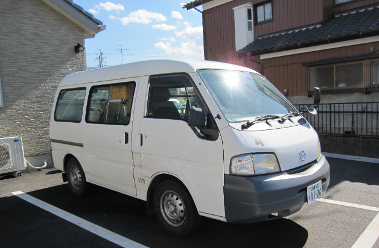
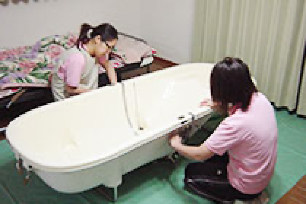
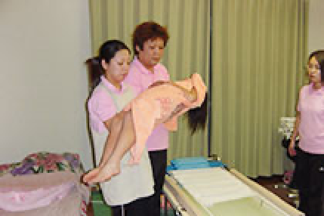
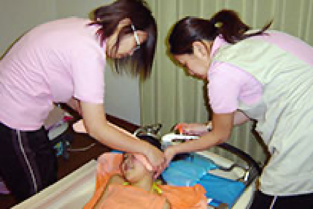
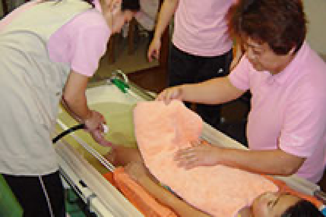
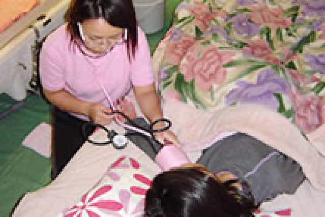
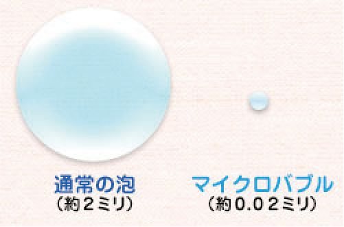
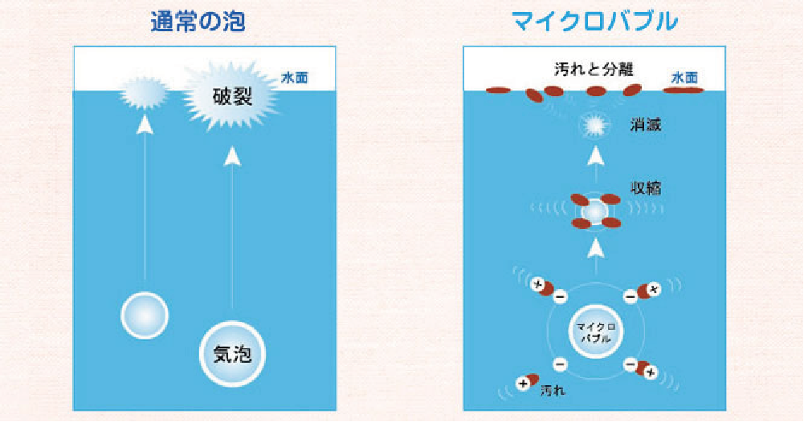
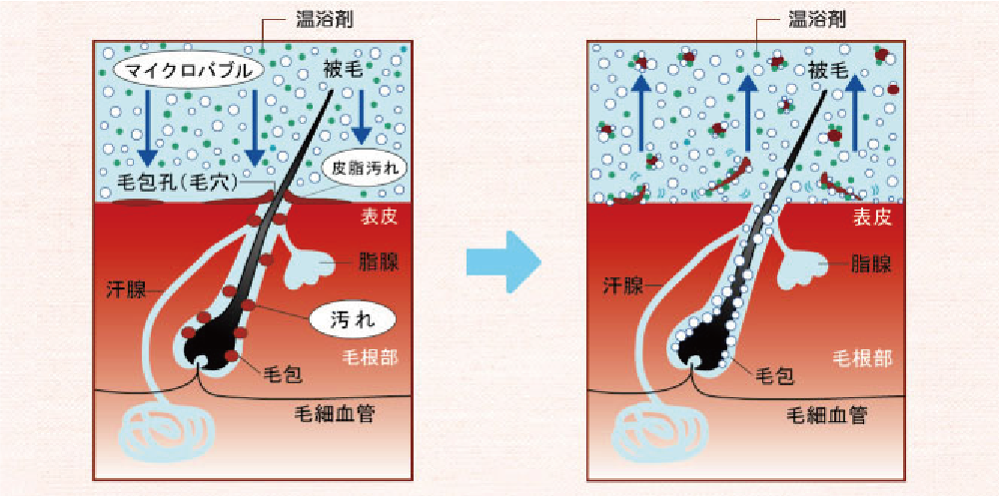
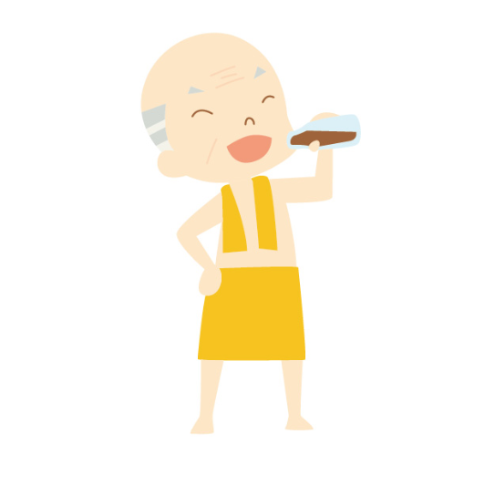

お家での介護でお風呂にどうやって入れようか悩んでる皆さん
そのお悩み解決させていただきます！
そのお悩み解決させていただきます！
・・・などなど、こういったことに当てはまる方には訪問入浴をお勧めさせていただきます。
サービス内容・流れ
訪問入浴の手順
step1
ご訪問
こんにちは。訪問入浴車で看護師、ケアスタッフ、オペレーターの３人1組で お伺いいたします。よろしくお願いします。

step2
入浴準備
お布団、ベットの横に防水シートを敷き、浴槽を組み立てます。 狭いスペースでも設置できます。 お湯は入浴車のボイラーで沸かし、お部屋までホースで持っていきます。

step3
体調チェック
看護師がお客様の体調を確認いたします。 血圧、脈拍、体温などを測り入浴可否の判断をします。
step4
浴槽への移動
お風呂に移動します。 お客様の状態によって、水平、座位、歩行でおこないます。 寝たきりの方も負担にならない姿勢で浴槽までお連れしますので、 ご安心ください。 入浴時間は、その日の体調に合わせて、 １０分前後になります。

step5
入浴（洗体・洗髪）
洗髪はお風呂に浸かりながら行います。タオルなどで目や耳を おさえているのでお湯は入りませんのでご安心ください。ご要望が あればシャンプーだけでなくリンスも致します。これらのシャンプー リンスはこちらでご用意いたします。 負担にならない姿勢で手、足、胸、背中と体を隅々まで 丁寧に洗います。ボディーソープは私たちが用意いたします。

step6
上がり湯
ゆっくり温まったあと、かけ湯をして上がります。 湯冷めをしないように心掛けます。

step7
浴後の体調チェック
タオルで髪や体を拭き、着替えて体調チェックをします。 入浴後も看護師が血圧、脈拍、体温などを測り お客様の体調管理をしますので、ご安心ください。 タオルは私たちが用意いたします。

オススメポイント
茨城県内初のマイクロバブル

マイクロバブルとは、ジェットバスの泡とは比べ物にならないほど、
小さな小さな気泡です。（髪の毛の約1/3）
その気泡に様々な機能があります。
通常の気泡とマイクロバブルの違い

マイクロバブルは、マイナスの電荷を帯びており、水中に漂うプラスの電荷を帯びた微細な異物に付着し、
上昇して水面に運びます。また、マイクロバブルはマイナスイオンを大量に発生し、皮膚に程よい刺激を与えます。
上昇して水面に運びます。また、マイクロバブルはマイナスイオンを大量に発生し、皮膚に程よい刺激を与えます。
毛穴の中まで汚れを取り除く

毛穴の入り口に詰まった汚れも取り除くので、毛穴の奥までマイクロバブルが行き届き、
毛穴の奥にある臭いの成分やかゆみの成分もしっかり取り除くことが出来きます。
毛穴の奥にある臭いの成分やかゆみの成分もしっかり取り除くことが出来きます。
だから、皮膚が弱く強く体を擦って洗うことのできない人にもピッタリ！
乳白色のお湯
マイクロバブルは乳白色です。
シャワーヘッドからマイクロバブルが出ます。１分程度で乳白色になります。
羞恥心に対する配慮と高い洗浄力があるマイクロバブルです。
シャワーヘッドからマイクロバブルが出ます。１分程度で乳白色になります。
羞恥心に対する配慮と高い洗浄力があるマイクロバブルです。
入浴後も違います

高くて長〜い保温効果があります
一般入浴
一般入浴の場合の表面温度は、 出浴の直後から下がり、 10分後には若干上昇するも、 徐々に冷えていきます。
マイクロバブル
入浴直後から表面温度は上がり、 出浴15分後にピークとなった後も 表面温度は高い状態を維持しています。